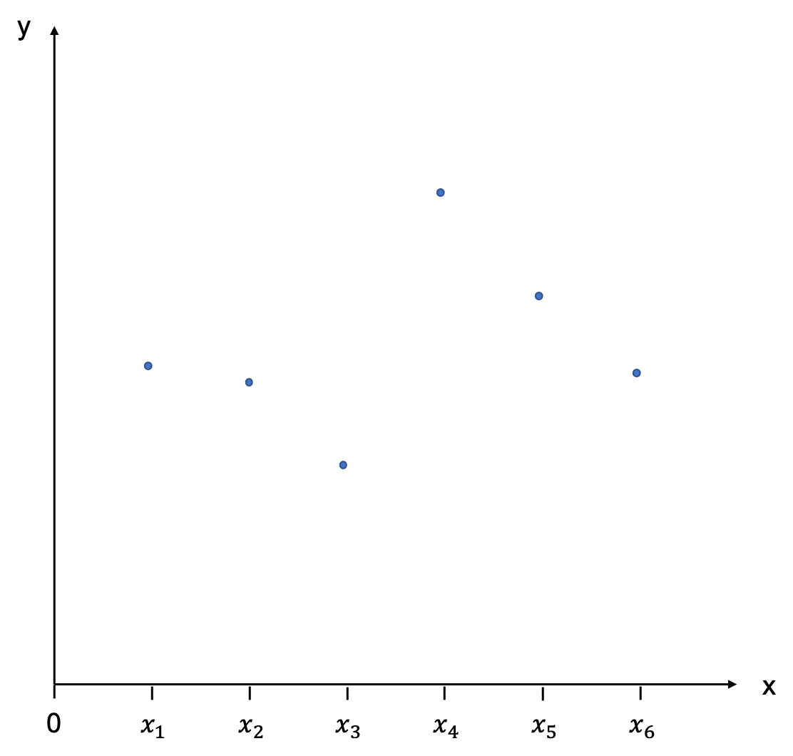
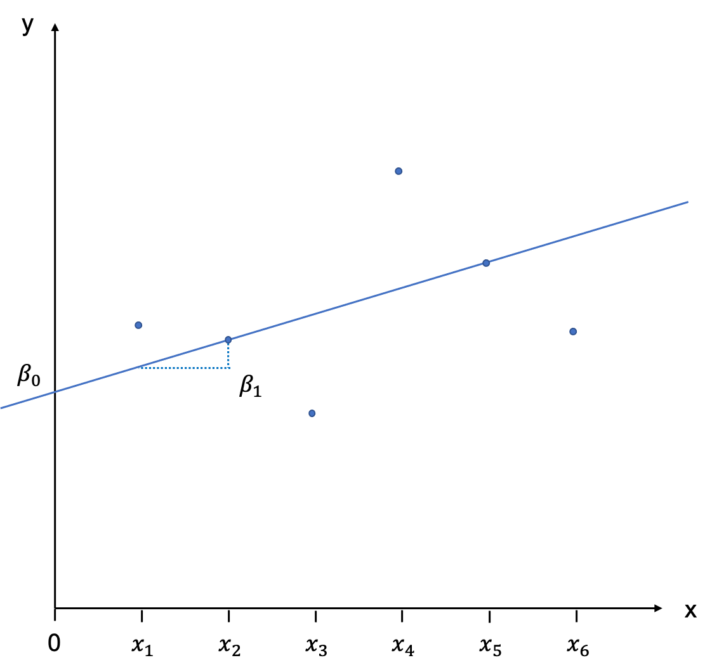
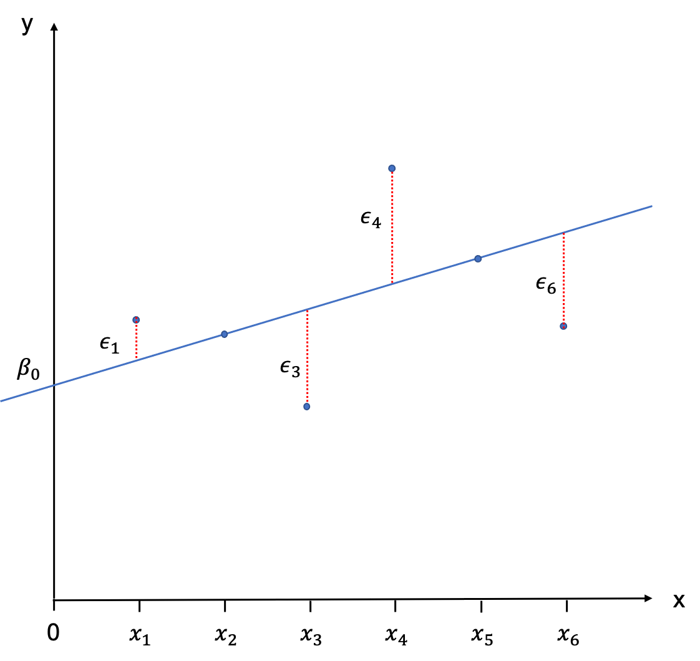
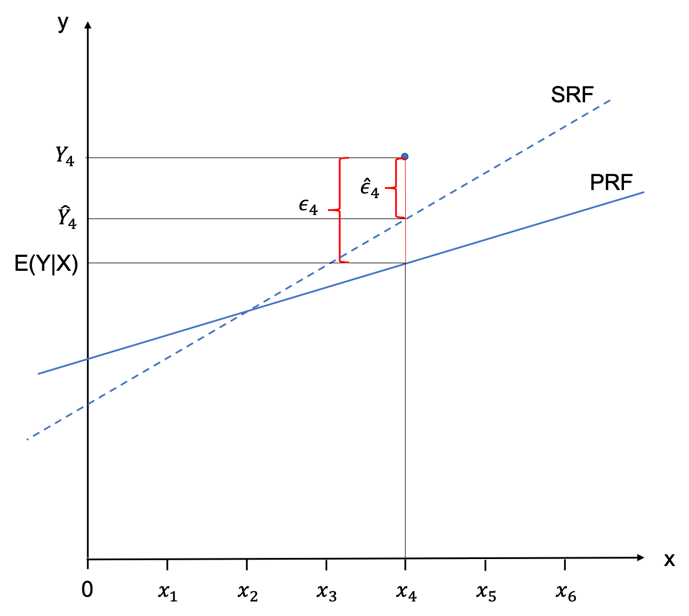
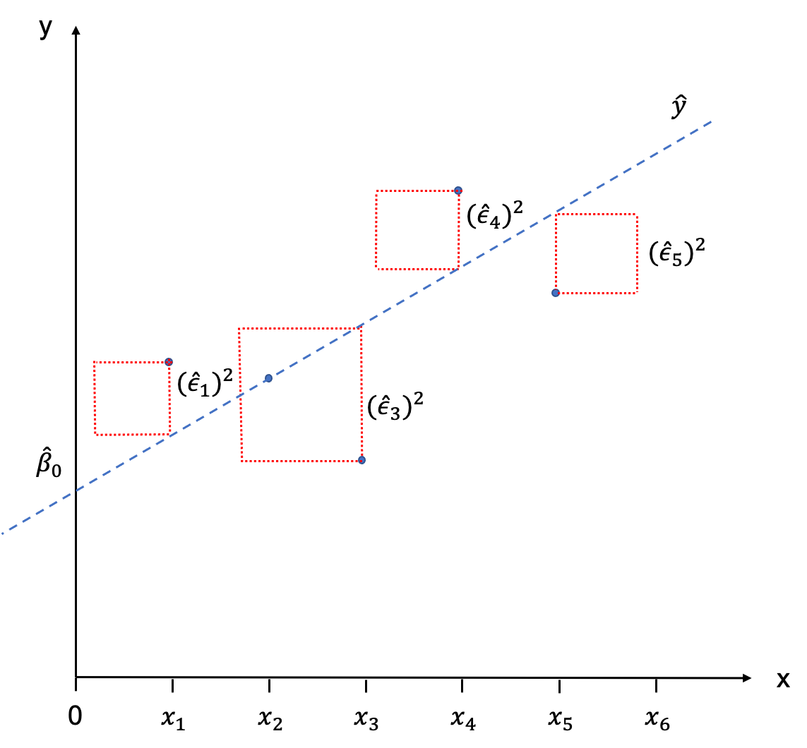
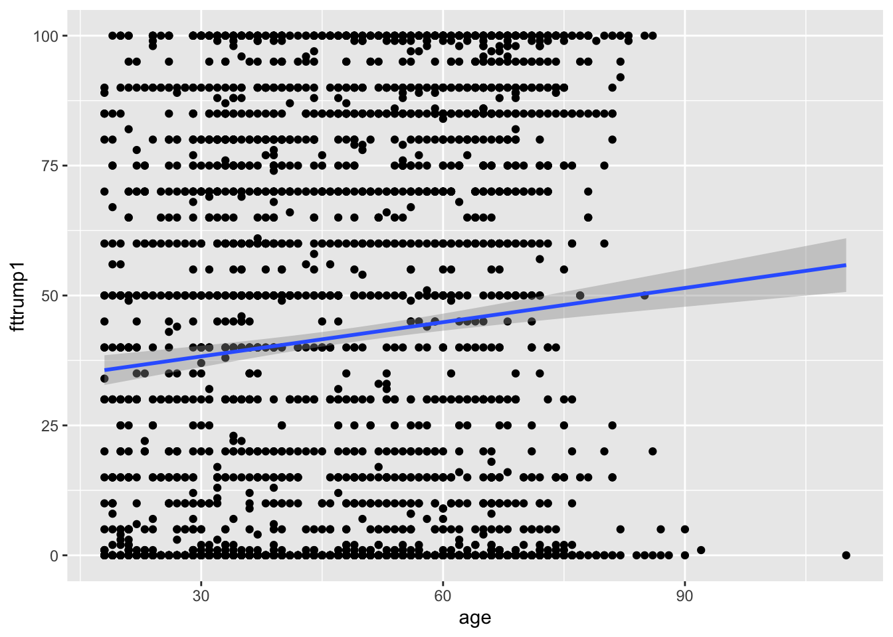
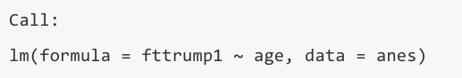
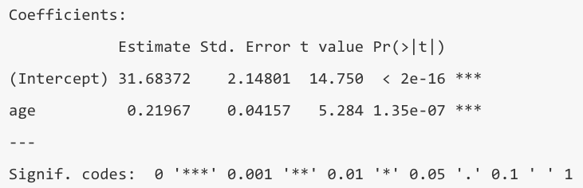

anes <- read.csv("data/anes.csv")Linear Regression
Introduction
Regression is the power house of the social sciences. It is widely applied and takes many different forms. In this Chapter we are going to explore the linear variant, also called Ordinary Least Squares (OLS). This type of regression is used if our dependent variable is continuous. In the following Chapter we will have a look at regression with a binary dependent variable and the calculation of the probability to fall into either of those two categories. But let’s first turn to linear regression.
Bivariate Linear Regression
The Theory
Regression is not only able to identify the direction of a relationship between an independent and a dependent variable, it is also able to quantify the effect. Let us choose Y as our dependent variable, and X as our independent variable. We have some data which we are displaying in a scatter plot:

With a little goodwill we can already see that there is a positive relationship: as X increases, Y increases, as well. Now, imagine taking a ruler and trying to fit in a line that best describes the relationship depicted by these points. This will be our regression line.
The position of a line in a coordinate system is usually described by two items: the intercept with the Y-axis, and the slope of the line. The slope is defined as rise over run, and indicates by how much Y increases (or decreases is the slope is negative) if we add an additional unit of X. In the notation which follows we will call the intercept \(\beta_{0}\), and the slope \(\beta_{1}\). It will be our task to estimate these values, also called coefficients. You can see this depicted graphically here:

Population
We will first assume here that we are dealing with the population and not a sample. The regression line we have just drawn would then be called the Population Regression Function (PRF) and is written as follows:
\[\begin{equation} E(Y|X_{i}) = \beta_{0} + \beta_{1} X_{i} (\#eq:prf) \end{equation}\]
Because wer are dealing with the population, the line is the geometric locus of all the expected values of the dependent variable Y, given the values of the independent variables X. This has to do with the approach to statistics that underpins this module: frequentist statsctics (as opposed to Bayesian statistics). We are understanding all values to be “in the long run”, and if we sampled repeatedly from a population, then the expected value is the value we would, well, expect to see most often in the long run.
The regression line is not intercepting with all observations. Only two are located on the line, and all others have a little distance between them and the PRF. These distances between \(E(Y|X_{i})\) and \(Y_{i}\) are called error terms and are denoted as \(\epsilon_{i}\).

To describe the observations \(Y_{i}\) we therefore need to add the error terms to equation @ref(eq:prf):
\[\begin{equation} Y_{i} = \beta_{0} + \beta_{1} X_{i} + \epsilon_{i} (\#eq:pop) \end{equation}\]
Sample
In reality we hardly ever have the population in the social sciences, and we generally have to contend with a sample. Nonetheless, we can construct a regression line on the basis of the sample, the Sample Regression Function (SRF). It is important to note that the nature of the regression line we derive fromt he sample will be different for every sample, as each sample will have other values in it. Rarely, the PRF is the same as the SRF - but we are always using the SRF to estimate the PRF.
In order to flag this up in the notation we use to specify the SRF, we are using little hats over everything we estimate, like this:
\[\begin{equation} \hat{Y}_{i} = \hat{\beta}_{0} + \hat{\beta}_{1} X_{i} (\#eq:srf) \end{equation}\]
Analogously, we would would describe the observations \(Y_{i}\) by adding the estimated error terms \(\hat{\epsilon}_{i}\) to the equation.
\[\begin{equation} Y_{i} = \hat{\beta}_{0} + \hat{\beta}_{1} X_{i} + \hat{\epsilon}_{i} \end{equation}\]
The following graph visdualised the relationship between an observation, the PRF, the SRF and the respective error terms.

Ordinary Least Squares (OLS)
When you eye-balled the scatter plot at the start of this Chapter in order to fit a line through it, you have sub-consciously done so by minimising the distance between each of the observations and the line. Or put differently, you have tried to minimise the error term \(\hat{\epsilon}_{i}\). This is basically the intuition behind fitting the SRF mathematically, too. We try to minimise the sum of all error terms, so that all observations are as close to the regression line as possible. The only problem that we encounter when doing this is that these distances will always sum up to zero.
But similar to calculating the standard deviation where the differences between the observations and the mean would sum up to zero (essentially we are doing the same thing here), we simply square those distances. So we are not minimising the sum of distances between observations and the regression line, but the sum of the squared distances between the observations and the regression line. Graphically, we would end up with little squares made out of each \(\hat{\epsilon}_{i}\) which gives the the method its name: Ordinary Least Squares (OLS).

We are now ready to apply this stuff to a real-world example!
The Application
In the applied part of this Chapter, we are going to model the feelings towards Donald Trump in the lead-up to the presidential election 2020. Data for this investigation are taken from https://electionstudies.org/data-center/2020-exploratory-testing-survey/ Please follow this link and download the “2020 Exploratory Testing Survey” and pop it into a working directory.
We can then load the ANES data set:
summary(anes$fttrump1) Min. 1st Qu. Median Mean 3rd Qu. Max.
0.00 0.00 40.00 44.59 80.00 999.00 This is no good, as the variable is bounded between 0 and 100. In fact 999 is a placeholder for missing data throughout the data set. We need to replace this with NAs.
anes[anes == 999] <- NAIf we look at the summary again, everything looks fine now:
summary(anes$fttrump1) Min. 1st Qu. Median Mean 3rd Qu. Max. NA's
0.00 0.00 40.00 42.42 80.00 100.00 7 By the way, had you just wanted to replace this in one variable, for example only in fttrump1, you could have called:
anes$fttrump1 <- with(anes, replace(fttrump1, fttrump1 == 999, NA))Norris and Inglehart (2016) have argued that:
populist support in Europe is generally stronger among the older generation, men, the less educated, the religious, and ethnic majorities, patterns confirming previous research.
Let’s see if this also applies to presidential elections in the US. We first look at the question: “Do older people rate Trump higher than younger people?”. Our independent variables is age.
summary(anes$age) Min. 1st Qu. Median Mean 3rd Qu. Max.
18.00 34.75 49.00 48.87 63.00 110.00 Let’s evaluate the relationship through a scatter plot with a line of best fit:
library(tidyverse)
ggplot(anes, aes(x = age, y = fttrump1)) +
geom_point() +
geom_smooth(method = lm)
There is a positive relationship. We can calculate the exact numerical nature of that relationship as follows:
model1 <- lm(fttrump1 ~ age, data = anes)We start by specifying an object into which we store the results. Then we call lm which means linear model. Our dependent variable fttrump1 is listed first, and then after a tilde the independent variable, age. Finally, we tell R which data set to use. We can then print the result, by calling model1.
model1
Call:
lm(formula = fttrump1 ~ age, data = anes)
Coefficients:
(Intercept) age
31.6837 0.2197 How would we interpret these results?
- At an age of zero, a person would rate Trump at 31.68 on average. This of course makes little sense in anything but a theoretical / mathematical consideration.
- With every additional year of age, a person would rate Trump 0.22 points higher on average.
But are these findings significant at an acceptable significance level? Let’s find out, by getting a more detailed output:
summary(model1)
Call:
lm(formula = fttrump1 ~ age, data = anes)
Residuals:
Min 1Q Median 3Q Max
-55.847 -39.152 -0.523 39.258 64.143
Coefficients:
Estimate Std. Error t value Pr(>|t|)
(Intercept) 31.68372 2.14801 14.750 < 2e-16 ***
age 0.21967 0.04157 5.284 1.35e-07 ***
---
Signif. codes: 0 '***' 0.001 '**' 0.01 '*' 0.05 '.' 0.1 ' ' 1
Residual standard error: 38.67 on 3071 degrees of freedom
(7 observations deleted due to missingness)
Multiple R-squared: 0.009011, Adjusted R-squared: 0.008688
F-statistic: 27.92 on 1 and 3071 DF, p-value: 1.35e-07OK, there is a lot more here, and it is worth pausing to go through this step by step. First, R reminds us of the actual formula we have used to estimate the model:

I am ignoring the section on residuals, as we don’t need to make our life more difficult than it needs to be. Now come the coefficients:

The size and direction is of course the same as in our previous output, but this output now contains some additional information about the standard error, the resulting t-value, and the p-value. R is very helpful here, in that it offers us a varying amount of asterisks according to different, commonly accepted levels of significance. 0.05 is standard practice in the social sciences, so we will accept anything with one, or more asterisks. Both our intercept and the slope coefficient are significant at a 95% confidence level, so we have shown that there is a statistical relationship between age and ratings for Trump.
I am omitting the residual standard error for the same reason as before, but let us look at the model fit indicators.
Multiple R-Squared (aka \(R^{2}\)) tells us how much variation in the dependent variable fttrump1 is explained through the independent variable age. \(R^{2}\) runs between 0 and 1, where 1 is equal to 100% of the variation. In our case, we have explained a mere 0.09% of the Trump rating. This is lousy, and we can do a lot better than that. Never expect anything near 100% unless you work with a toy data set from a text book. If you get 60-70% you can be very happy. I will return to Adjusted \(R^{2}\) in the Section on Multiple Linear Regression.
The F-statistic at the end:
is a test with the null hypothesis that all coefficients of the model are jointly zero. In our case, we can reject this null hypothesis very soundly, as the p-value is far below the commonly accepted maximum of 5%.
Categorical Independent Variables (aka ‘Dummies’)
Often variables are categorical. One such example is the variable sex which has two categories: male and female.
summary(anes$sex) Min. 1st Qu. Median Mean 3rd Qu. Max.
1.000 1.000 2.000 1.522 2.000 2.000 table(anes$sex)
1 2
1473 1607 Turn this into a factor variable and assign telling labels
anes$sex <- factor(anes$sex, labels = c("Male", "Female"))Check if this has worked:
table(anes$sex)
Male Female
1473 1607 Let’s estimate the model:
model2 <- lm(fttrump1 ~ sex, data = anes)
summary(model2)
Call:
lm(formula = fttrump1 ~ sex, data = anes)
Residuals:
Min 1Q Median 3Q Max
-46.156 -38.992 -1.156 38.844 61.008
Coefficients:
Estimate Std. Error t value Pr(>|t|)
(Intercept) 46.156 1.009 45.749 < 2e-16 ***
sexFemale -7.165 1.397 -5.129 3.09e-07 ***
---
Signif. codes: 0 '***' 0.001 '**' 0.01 '*' 0.05 '.' 0.1 ' ' 1
Residual standard error: 38.68 on 3071 degrees of freedom
(7 observations deleted due to missingness)
Multiple R-squared: 0.008493, Adjusted R-squared: 0.00817
F-statistic: 26.31 on 1 and 3071 DF, p-value: 3.095e-07How do we interpret this?
- Let’s do the slope coefficient first: a women would rate Trump at 7.16 points less than a man on average. The interpretation of a dummy variable coefficient is done with regards to the reference category. In our case this is “male”. So the effect we observe here is equivalent of moving from “male” to “female” and that effect adds 7.16 points.
- This gives you an indication of how to interpret the intercept in this case: The value displayed is how men would rate Trump on average, namely at 46.16 points. All of this is significant at a 95% confidence level.
This effect corroborates the hypothesis advanced by Inglehart and Norris, but the results are not displayed in the most elegant way. The sex these authors made a statement about were men. So we need to change the reference category to “female”.
anes <- anes %>%
mutate(sex = relevel(sex, ref = "Female"))When we re-estimate the model, we get the effect displayed directly:
model2 <- lm(fttrump1 ~ sex, data = anes)
summary(model2)
Call:
lm(formula = fttrump1 ~ sex, data = anes)
Residuals:
Min 1Q Median 3Q Max
-46.156 -38.992 -1.156 38.844 61.008
Coefficients:
Estimate Std. Error t value Pr(>|t|)
(Intercept) 38.9919 0.9661 40.358 < 2e-16 ***
sexMale 7.1646 1.3969 5.129 3.09e-07 ***
---
Signif. codes: 0 '***' 0.001 '**' 0.01 '*' 0.05 '.' 0.1 ' ' 1
Residual standard error: 38.68 on 3071 degrees of freedom
(7 observations deleted due to missingness)
Multiple R-squared: 0.008493, Adjusted R-squared: 0.00817
F-statistic: 26.31 on 1 and 3071 DF, p-value: 3.095e-07Whilst many categorical variables are binary, of course not all of them are. So how does this work with a categorical variable with 3 or more levels?
The next determinant mentioned in Inglehart and Norris’ paper is education. We can obtain information about a respondent’s level of education with the variable educ.
summary(anes$educ) Min. 1st Qu. Median Mean 3rd Qu. Max.
1.000 3.000 4.000 4.012 5.000 8.000 table(anes$educ)
1 2 3 4 5 6 7 8
100 656 622 326 761 424 102 89 This is not terribly telling in itself, yet, so let’s have a look at the codebook:
The first step is, as before to recode this variable into a factor variable:
anes$educ <- factor(anes$educ)Eight levels are too many here to do any meaningful analysis, and two would be too reductionist. For sake of simplicity, let’s go with three: low, medium and high education. We recode into an ordered factor as follows:
anes <- anes %>%
mutate(educ_fac = recode(educ, '1'="low",
'2'= "low",
'3'= "low",
'4' = "medium",
'5' = "medium",
'6' = "high",
'7' = "high",
'8' = "high"))Check the results:
table(anes$educ_fac)
low medium high
1378 1087 615 And we are ready to go:
model3 <- lm(fttrump1 ~ educ_fac, data = anes)
summary(model3)
Call:
lm(formula = fttrump1 ~ educ_fac, data = anes)
Residuals:
Min 1Q Median 3Q Max
-42.943 -42.019 -2.388 37.981 57.981
Coefficients:
Estimate Std. Error t value Pr(>|t|)
(Intercept) 42.0189 1.0481 40.090 <2e-16 ***
educ_facmedium 0.9240 1.5775 0.586 0.558
educ_fachigh 0.3693 1.8870 0.196 0.845
---
Signif. codes: 0 '***' 0.001 '**' 0.01 '*' 0.05 '.' 0.1 ' ' 1
Residual standard error: 38.85 on 3070 degrees of freedom
(7 observations deleted due to missingness)
Multiple R-squared: 0.0001119, Adjusted R-squared: -0.0005395
F-statistic: 0.1718 on 2 and 3070 DF, p-value: 0.8422Whilst the intercept is statistically significant, the slope coefficients are not. Therefore, we can conclude that education has no statistical influence on Trump’s approval ratings.
Note, that as in the sex example before, R has chose the first level of the independent variable as the reference category. If you wish to change this, you can do so in the same manner as before. You can also check which level R has used as the reference category with the contrasts() command. Here:
contrasts(anes$educ_fac) medium high
low 0 0
medium 1 0
high 0 1Summary for Bivariate Regression
And that’s it! You have made the first big step to understanding regression output and producing such output yourself. But explanations in the real world are never mono-causal. There are always multiple influences working at the same time, and we need to set up our statistical model to take this complexity into account. Which brings us to the next step: multiple regression.
Multiple Linear Regression
The Theory
We are simply extending Equation @ref(eq:srf) by adding more independent variables. For two independent variables we would write:
\[\begin{equation} \hat{Y} = \hat{\beta}_{0} + \hat{\beta}_{1} X_{1i} + \hat{\beta}_{2} X_{2i} \end{equation}\]
Note that not only the betas have a subscript now, but also the independent variables. For example \(X_{1i}\) would denote the \(i^{th}\) observation of independent variable 1.
We can extend this more generally to:
\[\begin{equation} \hat{Y} = \hat{\beta}_{0} + \hat{\beta}_{1} X_{1i} + \hat{\beta}_{2} X_{2i} + ... + \hat{\beta}_{n} X_{ni} (\#eq:srffull) \end{equation}\]
where n is the number of independent variables in the model.
The Application
Just as we have extended Equation @ref(eq:srf) to @ref(eq:srffull), we can extend our model in R - we simply need to connect the independent variables with +. If we wished to look at the joint influence of all independent variables we have included so far, we would type:
model4 <- lm(fttrump1 ~ age + sex + educ_fac, data = anes)
summary(model4)
Call:
lm(formula = fttrump1 ~ age + sex + educ_fac, data = anes)
Residuals:
Min 1Q Median 3Q Max
-55.109 -38.373 -1.385 37.536 68.242
Coefficients:
Estimate Std. Error t value Pr(>|t|)
(Intercept) 27.33647 2.40776 11.353 < 2e-16 ***
age 0.23274 0.04156 5.599 2.34e-08 ***
sexMale 7.66785 1.40848 5.444 5.62e-08 ***
educ_facmedium 0.32209 1.56889 0.205 0.837
educ_fachigh -0.36738 1.89537 -0.194 0.846
---
Signif. codes: 0 '***' 0.001 '**' 0.01 '*' 0.05 '.' 0.1 ' ' 1
Residual standard error: 38.5 on 3068 degrees of freedom
(7 observations deleted due to missingness)
Multiple R-squared: 0.01868, Adjusted R-squared: 0.0174
F-statistic: 14.6 on 4 and 3068 DF, p-value: 8.15e-12The Interpretation
As we have included multiple independent variables now, the interpretation of coefficients changes slightly. The principle here is called “Ceteris Paribus” which means “all other things being equal”. What exactly does that mean?
Take the coefficient for age, for example. If this was a bivariate regression we would interpret it as follows: “on average, for every additional year of age, the support for Trump would increase by 0.23274 units”. The first thing you will note here is that the size of this coefficient has changed. When we ran the bivariate model it was 0.21967. The reason is the inclusion of other variables. By doing this, we are isolating, or purifying the influence our variable age has, holding sex and educ_fac constant. You could also say “sex and educ_fac being equal, on average, for every additional year of age, the support for Trump would increase by 0.23274 units”. This is our new interpretation of coefficients in multiple regression.
Model Fit (again)
If I added “shoe size of interviewee” into the model, this would make absolutely no sense from a theoretical point of view. Yet, our R-Squared would either stay the same, or even increase. R-Squared can never decrease from the addition of more variables. This is of course no good. We need a measure that takes into account the number of independent variables, and penalises us for the inclusion of irrelevant variables. This measure is called “Adjusted R-Squared” and can be found at the bottom of the model summary.
If you run a bivariate model, always use “Multiple R-Squared”, when running multiple regression, always use “Adjusted R-Squared”. This will allow you to compare the model fit between models and to determine whether a variable adds explanatory power (“Adjusted R-Squared” increases), is pointless (“Adjusted R-Squared” stays the same), or is detrimental to the model (“Adjusted R-Squared” decreases).
Model Specification
You will have noticed that I quoted Norris and Inglehart’s determinants for populist support and I have done so intentionally. The selection of your independent variables always needs to be guided by theory. Theory provides a logic and a structure to our enquiry which makes it scientific (which is why what we do is called “Political Science” and not “Politics”, and let nobody tell you otherwise. Politics takes place in Westminster and is defined as the negotiation between different groups according to their respective power - don’t say you didn’t learn anything on this module). Otherwise, we would only be stabbing into the dark, randomly checking factors we deem influential.
The composition of a regression model therefore also needs to be guided by theory. If a theory has multiple components, or has been extended over time, you can test the propositions of each stage separately. Classical Modernisation for example, posits that wealthier countries are more democratic. Later on, influencing factors were extended to health, education, urbanisation, etc. So it would make sense to run a model with just GDP first, and then to add the other three variables.
Occasionally, the inclusion of new variables takes the significance away from previously included ones, and you are able to show that these new variables explain the variation in the dependent variable better. So, it always makes sense to test different combinations of independent variables to look deeper into which explains the outcome better / best.
One last word on selecting independent variables: you can’t just throw a random number of variables into the model. you need to observe the principle of parsimony which asks you to use as many variables as necessary, but as few as possible.
Summary
OLS Acronym for “Ordinary Least Squares”.
CLM Acronym for “Classical Linear Model”.
BLUE Acronym for “Best Linear Unbiased Estimator”.
Parsimony Use as many variables as necessary, but as few as possible.
Exercises
- The relationship proposed by Inglehart and Norris (2016) also includes religiosity and ethnic majorities as possible predictors.
- Using the variable
att2, assess in a bivariate regression the influence of religiosity. Categorise those attending services almost every week, or every week as ‘religious’, and all others as ‘not religious’. - Using the variable
latin1, assess in a bivariate regression if being a member of Hispanic, Latino, or Spanish origin has a negative effect on approving of Trump. - Another, frequently used variable to predict endorsements of politicians is income. In a bivariate regression, use the variable
incometo test this relationship. For this, create a new variable calledincome_facwith three levels: low income (0-44,999), medium income (45,000-84,999), and high income (>85,000).
References
Inglehart, Ronald F. and Norris, Pippa (2016) Trump, Brexit, and the Rise of Populism: Economic Have-Nots and Cultural Backlash. HKS Working Paper No. RWP16-026, Available at SSRN: https://ssrn.com/abstract=2818659 or http://dx.doi.org/10.2139/ssrn.2818659